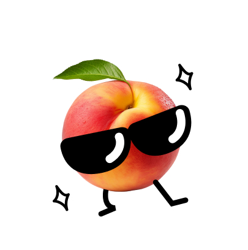
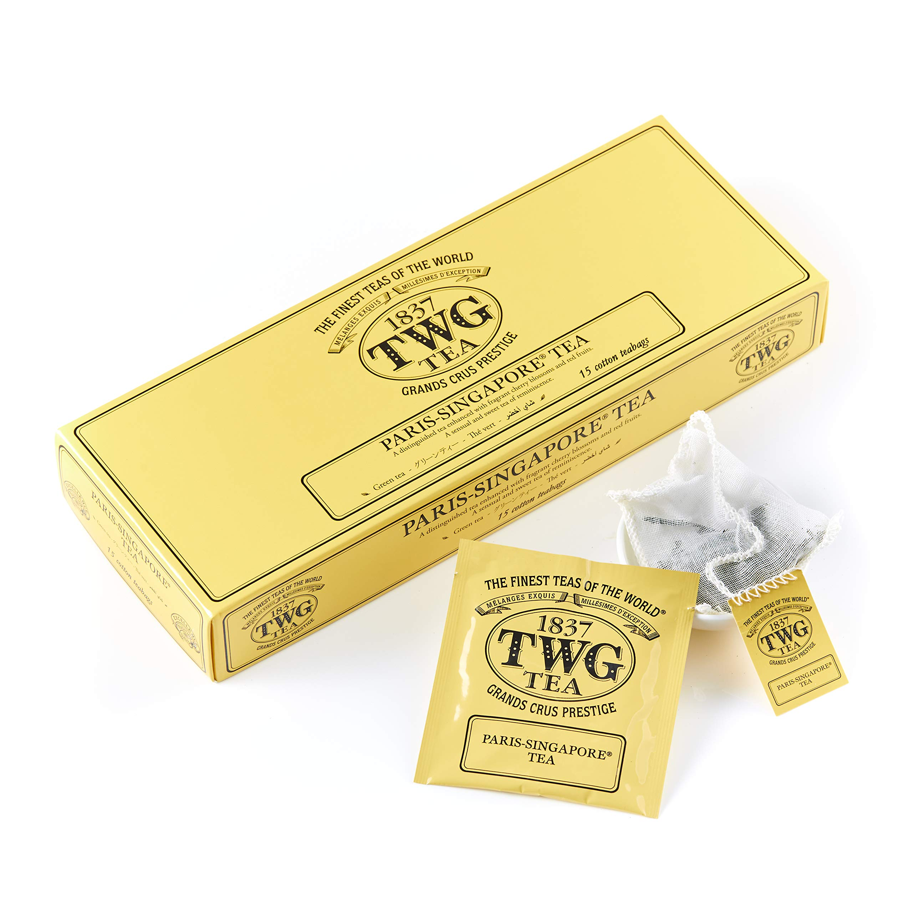

카리스마 넘치는 복숭아
배려는 고맙지만, 난 괜찮아
외유내강인 당신! 자신감 있지만 그만큼 상대방을 존중하고
매너있고 다정하지만 주관이 뚜렷해 잘 휘둘리지 않아요.
자존감이 높은편이라서 안 좋은 일이 있어도 비교적 잘 이겨내는
편이에요. 싸우는 것을 별로 좋아하지 않아 필요한 상황이 아니면
나서는 편이 아니에요. 그런 당신과 비슷한 차를 추천해줄게요.
추천 차
TWG - Paris Singapore
(teabags, caffeine)
향긋한 벚꽃과 붉은 과일을 더한 녹차예요.
다정한 당신만큼이나 향긋한 벚꽃향과 붉은 과일향을 입힌
뚜렷한 의견을 가진 당신과 비슷한 녹차를 추천할게요!